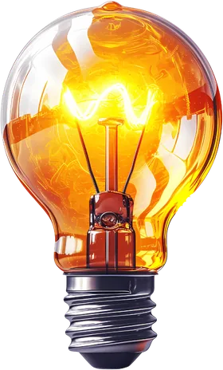

“Não demorou muito tempo para eu ver resultado na balança, as roupas que estavam apertadas começaram a cair, algumas eu cheguei a perder!”
Lilian Fernandes
Nutricionista Esportivo em Bangu - RJ e Online!
Se você já tentou de tudo: low carb, termogênicos, shakes e até medicamentos... Mas no fim, a balança te cumprimentou com o mesmo número de sempre...
Eu entendo isso perfeitamente, porque muitas das minhas pacientes já passaram por essa frustração. Mas se você está cansada de tanto esforço sem resultado, chegou a hora de mudar!
E o primeiro passo é acreditar. Veja abaixo quem já deu esse passo e descubra o que te espera!“Não demorou muito tempo para eu ver resultado na balança, as roupas que estavam apertadas começaram a cair, algumas eu cheguei a perder!”
Lilian Fernandes
“Eu tinha bastante dificuldade com a minha alimentação por causa de horários e estava perdendo bastante massa muscular...” “E hoje estou me sentindo super bem, animado!”
Joabe Gadelha
“Eu senti que não seria julgada, sabe? Eu poderia falar minhas dificuldades, os meus deslizes e estava tudo bem! Ele estava ali para me ajudar!”
Ana Luisa
Em sua primeira consulta, montaremos juntos e na hora, uma dieta com os alimentos que você gosta, que você coma bastante para não passar fome e que encaixe na sua rotina corrida!
Com meu método de check-in, você terá o suporte emocional e motivacional que merece, avaliando cada semana e ajustando o que for preciso para continuar evoluindo!
Ansiedade e tristeza fazem parte da sua alimentação? Porque muitos de nós comemos nossas emoções... Por isso, usaremos ferramentas comportamentais para te ajudar a lidar com elas e finalmente emagrecer!

“E se eu reganhar todo o peso que perdi!?”, também conhecido como efeito sanfona, esse é o maior medo de quem emagrece! Mas calma, irei te ensinar os conhecimentos essenciais e dar materiais para você vencê-lo!
Sobre mim
Nutricionista formado pela Universidade do Estado do Rio de Janeiro (UERJ) e pós-graduado em Nutrição Comportamental pela UNIGUAÇU, já emagreci 27 kg e ganhei mais de 15 kg de massa muscular, tudo isso comendo o que gosto!
Desde então, tenho como missão ajudar pessoas a reconquistarem a sua disposição e autoestima, de forma prática e saborosa, como um dia reconquistei!
É bem simples, basta que você clique no botão do Whatsapp no canto inferior direito ou em algum botão ao longo do site!
Simples! Porque, além de ser um profissional que está em constante atualização para te oferecer as melhores estratégias nutricionais, eu já estive onde você está hoje!
E o melhor de tudo, porque irei respeitar o seu momento de vida e adaptar a sua dieta aos seus gostos!
A minha abordagem 360! Para todos os seus problemas, eu tenho uma solução. Sejam eles familiares, comportamentais ou alimentares! E isso só é possível, porque reservo tempo na minha agenda para te dar o suporte que você merece e isso você não vai encontrar em nenhum outro atendimento!
Depende. O quanto você está disposto(a) a investir para cuidar da sua saúde? Se 5 reais ao dia, que é o preço de um lanche na rua, for muito, aí realmente meu acompanhamento é caro! Se não, pode ter certeza que será o melhor investimento que você já fez na sua saúde! O dinheiro que você vai economizar com lanches e evitando comprar suplementos que não funcionam, já cobrirão o seu investimento!
Atendo presencialmente em Bangu - Rio de Janeiro e online em mais de 5 estados brasileiros!
Presencialmente, eu realizo a avaliação corporal utilizando as dobras cutâneas por ser um método confiável e, não, não uso bioimpedância, porque escrevi um TCC sobre e sei que não é adequada para avaliar sua composição corporal!
E no atendimento online, a avaliação física é feita através de fotos comparativas, onde lhe mostrarei os pontos anatômicos de referência para ganho ou perda de gordura e de massa muscular!
Claro que não! Prescrevo suplementos e exames apenas mediante necessidade e, ainda assim, irei te consultar para saber se cabe no seu orçamento! Conseguimos ter grandes resultados apenas com os alimentos!
Atualmente, trabalho com intervalos de 40 dias entre as consultas para viabilizar um melhor parcelamento!
Não aceito... Mas calma! Deixe eu te explicar. Hoje trabalho apenas com atendimentos particulares para entregar o melhor suporte que você já viu! Nada de dieta de gaveta e reajustes depois de 30 dias.
Por outro lado, existem planos que me aceitam! Como assim? É simples, ligue para o seu plano e veja se eles fazem o reembolso de consultas particulares com Nutricionista! Aí eu emito sua nota fiscal para reembolso e podemos começar nosso acompanhamento, sabia dessa? D+, né?